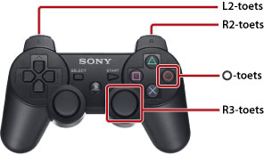

Deze gids gebruiken
Deze gids bevat gedetailleerde informatie over het gebruik van de PS3™-systeemsoftware. Raadpleeg de documentatie die bij het systeem werd geleverd voor meer informatie over hardwarefuncties en productveiligheid.
Opmerkingen over de weergave van de gids
Het is aanbevolen om de gids onder de volgende omstandigheden te bekijken:
- Schakel JavaScript in op uw browser. Als JavaScript uitgeschakeld is voor de gebruikte browser, wordt de gids mogelijk niet of niet correct weergegeven.
- Gelieve Microsoft Internet Explorer 6.0 of hoger te gebruiken als u de gids op een pc bekijkt.
De gids met het PS3™-systeem doorbladeren
Gebruik onderstaande basisfuncties als u de gids met behulp van de  (internetbrowser) van het PS3™-systeem bekijkt.
(internetbrowser) van het PS3™-systeem bekijkt.
| Richtingstoetsen | De aanwijzer naar een link verplaatsen. |
|---|---|
 -toets -toets |
De link openen. |
| Rechter joystick | Schuif in om het even welke richting. |
| L1-toets | Ga terug naar de vorige pagina. |
U kunt de zoomweergave als volgt gebruiken.

| Drukken op de R3-toets (rechter joystick) | Zoomweergave gebruiken. / Zoomweergave annuleren. |
|---|---|
| De L2-toets / R2-toets ingedrukt houden tijdens het zoomen | De weergave vergroten. / De weergave verkleinen. |
De  -toets ingedrukt houden tijdens het zoomen -toets ingedrukt houden tijdens het zoomen |
Zoomweergave annuleren. |
Verklaring van de toetsenreferenties in deze gids
De toetsen van het PS3™-systeem die voor het bevestigen en annuleren van items worden gebruikt, variëren naargelang de regio en het product. Als regel geldt dat de Engelse versie van deze gids en de versies in andere Europese talen voor het bevestigen van een item en voor het annuleren van een item gebruiken, terwijl de versies in andere talen voor bevestigen en voor annuleren gebruiken.
De gids afdrukken
U kunt de gids met een pc afdrukken. Door de onderstaande stappen te volgen kunt u meerdere pagina's in één keer afdrukken.
1. |
Gebruik Microsoft Windows Internet Explorer om [Index handleiding] van deze gids weer te geven. |
|---|---|
2. |
Selecteer [Afdrukken] uit het menu van Internet Explorer. |
3. |
Selecteer het tabblad [Opties] en selecteer vervolgens het selectievakje voor [Alle gekoppelde documenten afdrukken] om deze gids af te drukken. |